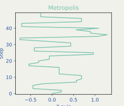
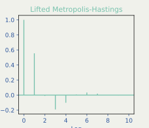
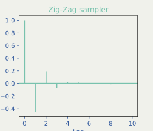

![]()
1 The Zig-Zag Sampler: What Is It?
A continuous-time variant of MCMC algorithms

A Blog Entry on Bayesian Computation by an Applied Mathematician
$$
$$
1.1 Keywords: PDMP (1/2)
PDMP (Piecewise Deterministic1 Markov Process2) (Davis, 1984)
- Mostly deterministic with the exception of random jumps happens at random times
- Continuous-time, instead of discrete-time processes
Plays a complementary role to SDEs / Diffusions
| Property | PDMP | SDE |
|---|---|---|
| Exactly simulatable? | ||
| Subject to discretization errors? | ||
| Driving noise | Poisson | Gauss |
History of PDMP Applications
- First applications: control theory, operations research, etc. (Davis, 1993)
- Second applications: Monte Carlo simulation in material sciences (Peters and de With, 2012)
- Third applications: Bayesian statistics (Bouchard-Côté et al., 2018)
1.2 Keywords: PDMP (2/2)
- We will concentrate on Zig-Zag sampler (Bierkens, Fearnhead, et al., 2019)
- Other PDMPs: Bouncy sampler (Bouchard-Côté et al., 2018) , Boomerang sampler (Bierkens et al., 2020)

1.4 Review: Metropolis-Hastings (1/2)
MH algorithm works even without p’s normalizing constant. Hence, its ubiquity.
1.5 Review: Metropolis-Hastings (2/2)
Alternative View: MH is a generic procedure to turn a simple q-Markov chain into a Markov chain converging to p.
1.6 Problem: Reversibility
Reversibility (a.k.a detailed balance): p(x)q(x|y)=p(y)q(y|x). In words: \text{Probability}[\text{Going}\;x\to y]=\text{Probability}[\text{Going}\;y\to x]. Harder to explore the entire space
Slow mixing of MH
From the beginning of 21th century, many efforts have been made to make MH irreversible.
1.7 Lifting (1/3)
Lifting: A method to make MH’s dynamics irreversible
How?: By adding an auxiliary variable \sigma\in\{\pm1\}, called momentum
1.8 Lifting (2/3)

q^{(+1)}: Only propose \rightarrow moves
q^{(-1)}: Only propose \leftarrow moves
Once going uphill, it continues to go uphill.
This is irreversible, since
\begin{align*} &\text{Probability}[x\to y]\\ &\qquad\ne\text{Probability}[y\to x]. \end{align*}
1.9 Lifting (3/3)
Reversible dynamic of MH has ‘irreversified’


Caution
Scale is different in the vertical axis!
Lifted MH successfully explores the edges of the target distribution.
*Irreversibility actually improves the efficiency of MCMC, as we observe in two slides later.
1.10 Comparison: MH vs. LMH vs. Zig-Zag (1/2)

Zig-Zag corresponds to the limiting case of lifted MH as the step size of proposal q goes to zero, as we’ll learn later.
Zig-Zag has a maximum irreversibility.
1.11 Comparison: MH vs. LMH vs. Zig-Zag (2/2)
Irreversibility actually improves the efficiency of MCMC.
Faster decay of autocorrelation \rho_t\approx\mathrm{Corr}[X_0,X_t] implies
- faster mixing of MCMC
- lower variance of Monte Carlo estimates



1.12 Review: MALA
Two MCMC algorithms derived from Langevin diffusion:
ULA (Unadjusted Langevin Algorithm)
\quad Use the discretization of (X_t). Discretization errors accumulate.
MALA (Metropolis Adjusted Langevin Algorithm)
\quad Use ULA as a proposal in MH, erasing the errors by MH steps.
1.13 Comparison: Zig-Zag vs. MALA (1/3)
How fast do they go back to high-probability regions? 4


Irreversibility of Zig-Zag accelerates its convergence.
1.14 Comparison: Zig-Zag vs. MALA (2/3)
Caution: Fake Continuity
The left plot looks continuous, but it actually is not.
MH, including MALA, is actually a discrete-time process.
The plot is obtained by connecting the points by line segments.
1.15 Comparison: Zig-Zag vs. MALA (3/3)
Monte Carlo estimation is also done differently:
MALA outputs (X_n)_{n\in[N]} defines
\frac{1}{N}\sum_{n=1}^Nf(X_n)\xrightarrow{N\to\infty}\int_{\mathbb{R}^d} f(x)p(x)\,dx.
Zig-Zag outputs (X_t)_{t\in[0,T]} defines
\int^T_0f(X_t)\,dt\xrightarrow{T\to\infty}\int_{\mathbb{R}^d} f(x)p(x)\,dx.
1.16 Recap of Section 1
- Zig-Zag Sampler’s trajectory is a PDMP.
- PDMP, by design, has maximum irreversibility.
- Irreversibility leads to faster convergence of Zig-Zag in comparisons against MH, Lifted MH, and especially MALA.
2 The Algorithm: How to Use It?
Fast and exact simulation of continuous trajectory.
2.1 Review: MH vs. LMH vs. Zig-Zag (1/2)
As we’ve learned before, Zig-Zag corresponds to the limiting case of lifted MH as the step size of proposal q goes to zero.
2.2 Review: MH vs. LMH vs. Zig-Zag (2/2)
‘Limiting case of lifted MH’ means that we only simulate where we should flip the momentum \sigma\in\{\pm1\} in Lifted MH.
2.3 Algorithm (1/2)
‘Limiting case of lifted MH’ means that we only simulate where we should flip the momentum \sigma\in\{\pm1\} in Lifted MH.
2.4 Algorithm (2/2)
Its ergodicity is ensured as long as there exists c,C>0 such that6 p(x)\le C\lvert x\rvert^{-c}.
2.5 Core of the Algorithm
Given a rate function \lambda(x,\sigma):=\biggr(\sigma U'(x)\biggl)_++\;\gamma(x) how to simulate a corresponding Poisson point process?
2.6 Simulating Poisson Point Process (1/2)
When \displaystyle\lambda(x,\sigma)\equiv c\;(\text{constant}),
blue line: Poisson Process
red dots: Poisson Point Process
satisfying \displaystyle\textcolor{#0096FF}{N_t}=\textcolor{#E95420}{N([0,t])}\sim\mathrm{Pois}(ct).
2.7 Simulating Poisson Point Process (2/2)
Since \displaystyle\lambda(x,\sigma):=\biggr(\sigma U'(x)\biggl)_++\;\gamma(x), M can be quite complicated.
Inverting M can be impossible.
We need more general techniques: Poisson Thinning.
2.8 Poisson Thinning (1/2)
m(t): Defined via \displaystyle\lambda(x,\sigma):=\biggr(\sigma U'(x)\biggl)_++\;\gamma(x).
M(t): Simple upper bound m\le M, such that M^{-1} is analytically tractable.
2.9 Poisson Thinning (2/2)
In order to simulate a Poisson Point Process with rate \lambda(x,\sigma):=\biggr(\sigma U'(x)\biggl)_++\;\gamma(x), we find a invertible upper bound M that satisfies \int^t_0\lambda(x_s,\sigma_s)\,ds=m(t)\le\textcolor{#0096FF}{M}(t). for all possible Zig-Zag trajectories \{(x_s,\sigma_s)\}_{s\in[0,T]}.
2.10 Recap of Section 2
- Continuous-time MCMC, based on PDMP, has an entirely different algorithm and strategy.
- To simulate PDMP is to simulate Poisson Point Process.
- The core technology to simulate Poisson Point Process is Poisson Thinning.
- Poisson Thinning is about finding an upper bound M, with tractable inverse M^{-1}; Typically a polynomial function.
- The upper bound M has to be given on a case-by-case basis.
3 Proof of Concept: How Good Is It?
Quick demonstration of the state-of-the-art performance on a toy example.
3.1 Review: The 3 Steps of Zig-Zag Sampling
Given a target p,
- Calculate the negative log-likelihood U(x):=-\log p(x)
- Fix a refresh rate \gamma(x) and compute the rate function \lambda(x,\sigma):=\biggr(\sigma U'(x)\biggl)_++\;\gamma(x).
- Find an invertible upper bound M that satisfies \int^t_0\lambda(x_s,\sigma_s)\,ds=:m(t)\le\textcolor{#0096FF}{M}(t).
3.2 Model: 1d Gaussian Mean Reconstruction
The negative log-likelihood: \begin{align*} U(x)&=-\log p(x)\\ &=\frac{x^2}{2\rho^2}+\frac{1}{2\sigma^2}\sum_{i=1}^n(x-y_i)^2+\mathrm{const.},\\ U'(x)&=\frac{x}{\rho^2}+\frac{1}{\sigma^2}\sum_{i=1}^n(x-y_i),\\ U''(x)&=\frac{1}{\rho^2}+\frac{n}{\sigma^2}. \end{align*}
3.3 Menu
In the rest of this Section 3, we’ll learn:
- Even a simple Zig-Zag Sampler with \gamma\equiv0 surpasses MALA.
- Incorporating sub-sampling, Zig-Zag with Control Variates further improves the efficiency.

3.4 Simple Zig-Zag Sampler with \gamma\equiv0 (1/2)
Fixing \gamma\equiv0, we obtain the upper bound M \begin{align*} m(t)&=\int^t_0\lambda(x_s,\sigma_s)\,ds=\int^t_0\biggr(\sigma U'(x_s)\biggl)_+\,ds\\ &\le\left(\frac{\sigma x}{\rho^2}+\frac{\sigma}{\sigma^2}\sum_{i=1}^n(x-y_i)+t\left(\frac{1}{\rho^2}+\frac{n}{\sigma^2}\right)\right)_+\\ &=:(a+bt)_+=\textcolor{#0096FF}{M}(t), \end{align*}
where a=\frac{\sigma x}{\rho^2}+\frac{\sigma}{\sigma^2}\sum_{i=1}^n(x-y_i),\quad b=\frac{1}{\rho^2}+\frac{n}{\sigma^2}.
3.5 Result: 1d Gaussian Mean Reconstruction
We generated 100 samples from \mathrm{N}(x_0,\sigma^2) with x_0=1.
3.6 MSE per Epoch: The Vertical Axis
MSE (Mean Squared Error) of \{X_i\}_{i=1}^n is defined as \frac{1}{n}\sum_{i=1}^n(X_i-x_0)^2. Epoch: Unit computational cost.
3.7 Good News!
Case-by-case construction of an upper bound M is too complicated / demanding.
Therefore, we are trying to automate the whole procedure.
References

Besag, J. E. (1994). Comments on “Representations of Knowledge in Complex Systems” by U. Grenander and M. I. Miller. Journal of the Royal Statistical Society. Series B (Methodological), 56(4), 591–592.
Bierkens, J., Fearnhead, P., and Roberts, G. (2019). The Zig-Zag Process and Super-Efficient Sampling for Bayesian Analysis of Big Data. The Annals of Statistics, 47(3), 1288–1320.
Bierkens, J., Grazzi, S., Kamatani, K., and Roberts, G. O. (2020). The boomerang sampler. Proceedings of the 37th International Conference on Machine Learning, 119, 908–918.
Bierkens, J., Roberts, G. O., and Zitt, P.-A. (2019). Ergodicity of the zigzag process. The Annals of Applied Probability, 29(4), 2266–2301.
Bouchard-Côté, A., Vollmer, S. J., and Doucet, A. (2018). The bouncy particle sampler: A nonreversible rejection-free markov chain monte carlo method. Journal of the American Statistical Association, 113(522), 855–867.
Corbella, A., Spencer, S. E. F., and Roberts, G. O. (2022). Automatic Zig-Zag Sampling in Practice. Statistics and Computing, 32(6), 107.
Dai, H., Pollock, M., and Roberts, G. (2019). Monte Carlo Fusion. Journal of Applied Probability, 56(1), 174–191.
Davis, M. H. A. (1984). Piecewise-deterministic markov processes: A general class of non-diffusion stochastic models. Journal of the Royal Statistical Society. Series B (Methodological), 46(3), 353–388.
Davis, M. H. A. (1993). Markov models and optimization,Vol. 49. Chapman & Hall.
Duane, S., Kennedy, A. D., Pendleton, B. J., and Roweth, D. (1987). Hybrid monte carlo. Physics Letters B, 195(2), 216–222.
Fearnhead, P., Grazzi, S., Nemeth, C., and Roberts, G. O. (2024). Stochastic gradient piecewise deterministic monte carlo samplers.
Grazzi, S. (2020). Piecewise deterministic monte carlo.
Hastings, W. K. (1970). Monte carlo sampling methods using markov chains and their applications. Biometrika, 57(1), 97–109.
Lewis, P. A. W., and Shedler, G. S. (1979). Simulation of nonhomogeneous poisson processes by thinning. Naval Research Logistics Quarterly, 26(3), 403–413.
Metropolis, N., Rosenbluth, A. W., Rosenbluth, M. N., Teller, A. H., and Teller, E. (1953). Equation of state calculations by fast computing machines. The Journal of Chemical Physics, 21(6), 1087–1092.
Pagani, F., Chevallier, A., Power, S., House, T., and Cotter, S. (2024). NuZZ: Numerical zig-zag for general models. Statistics and Computing, 34(1), 61.
Peters, E. A. J. F., and de With, G. (2012). Rejection-free monte carlo sampling for general potentials. Physical Review E, 85(2).
Scott, S. L., Blocker, A. W., Bonassi, F. V., Chipman, H. A., George, E. I., and McCulloch, R. E. (2016). Bayes and big data: The consensus monte carlo algorithm. International Journal of Management Science and Engineering Management, 11, 78–88.
Srivastava, S., Cevher, V., Dinh, Q., and Dunson, D. (2015). WASP: Scalable Bayes via barycenters of subset posteriors. In G. Lebanon and S. V. N. Vishwanathan, editors, Proceedings of the eighteenth international conference on artificial intelligence and statistics,Vol. 38, pages 912–920. San Diego, California, USA: PMLR.
Sutton, M., and Fearnhead, P. (2023). Concave-Convex PDMP-based Sampling. Journal of Computational and Graphical Statistics, 32(4), 1425–1435.
Turitsyn, K. S., Chertkov, M., and Vucelja, M. (2011). Irreversible Monte Carlo algorithms for Efficient Sampling. Physica D-Nonlinear Phenomena, 240(5-Apr), 410–414.
Welling, M., and Teh, Y. W. (2011). Bayesian learning via stochastic gradient langevin dynamics. In Proceedings of the 28th international conference on international conference on machine learning, pages 681–688. Madison, WI, USA: Omnipress.
Appendix: Scalability by Subsampling
Construction of ZZ-CV (Zig-Zag with Control Variates).
3.8 Review: 1d Gaussian Mean Reconstruction
U' has an alternative form:
\begin{align*} U'(x)&=\frac{x}{\rho^2}+\frac{1}{\sigma^2}\sum_{i=1}^n(x-y_i)=:\frac{1}{n}\sum_{i=1}^nU'_i(x), \end{align*} where U'_i(x)=\frac{x}{\rho^2}+\frac{n}{\sigma^2}(x-y_i).
We only need one sample y_i to evaluate U'_i.
3.9 Randomized Rate Function
Instead of \lambda_{\textcolor{#78C2AD}{\text{ZZ}}}(x,\sigma)=\biggr(\sigma U'(x)\biggl)_+ we use \lambda_{\textcolor{#E95420}{\text{ZZ-CV}}}(x,\sigma)=\biggr(\sigma U'_I(x)\biggl)_+,\qquad I\sim\mathrm{U}([n]). Then, the latter is an unbiased estimator of the former: \operatorname{E}_{I\sim\mathrm{U}([n])}\biggl[\lambda_{\textcolor{#E95420}{\text{ZZ-CV}}}(x,\sigma)\biggr]=\lambda_{\textcolor{#78C2AD}{\text{ZZ}}}(x,\sigma).
3.10 Last Step: Poisson Thinning
Find an invertible upper bound M that satisfies \int^t_0\lambda_{\textcolor{#E95420}{\text{ZZ-CV}}}(x_s,\sigma_s)\,ds=:m_I(t)\le\textcolor{#0096FF}{M}(t),\qquad I\sim\mathrm{U}([n]). It is harder to bound \lambda_{\textcolor{#E95420}{\text{ZZ-CV}}}, since it is now an estimator (random function).
3.11 Upper Bound M with Control Variates
Then, with a re-parameterization of m_i, m_i(t)\le M(t):=a+bt,
where a=(\sigma U'(x_*))_++\|U'\|_\mathrm{Lip}\|x-x_*\|_p,\qquad b:=\|U'\|_\mathrm{Lip}. And m_i is redefined as m_i(t)=U'(x_*)+U'_i(x)-U'_i(x_*).
3.12 Subsampling with Control Variates
Zig-Zag sampler with the random rate function \lambda_{\textcolor{#E95420}{\text{ZZ-CV}}}(x,\sigma)=\biggr(\sigma U'_I(x)\biggl)_+,\qquad I\sim\mathrm{U}([n]). and the upper bound M(t)=a+bt is called Zig-Zag with Control Variates (Bierkens, Fearnhead, et al., 2019).
3.13 Zig-Zag with Control Variates
- has O(1) efficiency as the sample size n grows.7
- is exact (no bias).
3.14 Scalability (1/3)
There are currently two main approaches to scaling up MCMC for large data.
Devide-and-conquer
Devide the data into smaller chunks and run MCMC on each chunk.
Subsampling
Use a subsampling estimate of the likelihood, which does not require the entire data.
3.15 Scalability (2/3) by Devide-and-conquer
Devide the data into smaller chunks and run MCMC on each chunk.
| Unbiased? | Method | Reference |
|---|---|---|
| WASP | (Srivastava et al., 2015) | |
| Consensus Monte Carlo | (Scott et al., 2016) | |
| Monte Carlo Fusion | (Dai et al., 2019) |
3.16 Scalability (3/3) by Subsampling
Use a subsampling estimate of the likelihood, which does not require the entire data.
| Unbiased? | Method | Reference |
|---|---|---|
| Stochastic Gadient MCMC | (Welling and Teh, 2011) | |
| Zig-Zag with Subsampling | (Bierkens, Fearnhead, et al., 2019) | |
| Stochastic Gradient PDMP | (Fearnhead et al., 2024) |
Footnotes
Mostly deterministic with the exception of random jumps happens at random times↩︎
Continuous-time, instead of discrete-time processes↩︎
under fairly general conditions on p.↩︎
The target here is the standard Cauchy distribution \mathrm{C}(0,1), equivalent to \mathrm{t}(1) distribution. Its heavy tails hinder the convergence of MCMC.↩︎
Multidimensional extension is straightforward, but we won’t cover it today.↩︎
With some regularity conditions on U. (See Bierkens, Roberts, et al., 2019).↩︎
As long as the preprocessing step is properly done.↩︎
Reuse
Citation
BibTeX citation:
@unpublished{shiba_|_司馬博文2024,
author = {Shiba \textbar{} 司馬博文, Hirofumi},
title = {Zig-Zag {Sampler}},
date = {2024-09-10},
url = {https://162348.github.io/posts/2024/Slides/ZigZagPoliSci.html},
langid = {en},
abstract = {Zig-Zag sampler, known as an instance of “Continuous-time
MCMC”, is a cutting-edge sampling method that exhibits scalability
and state-of-the-art performance on high-dimensional models
including logistic models etc. This talk includes a brief
introduction to the Zig-Zag sampler and the two important
properties, irreversibility of its dynamics and thinning of Poisson
point processes, followed by a few numerical experiments on logistic
models with large and unbalanced data.}
}
For attribution, please cite this work as:
Shiba | 司馬博文, H. (2024, September). Zig-Zag
Sampler. Seoul National University, Gwanak (관악) campus,
South Korea.